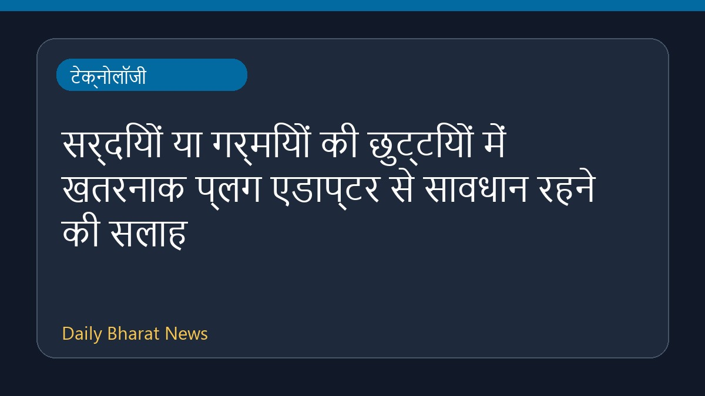

सर्दियों या गर्मियों की छुट्टियों में खतरनाक प्लग एडाप्टर से सावधान रहने की सलाह

इलेक्ट्रिकल सेफ्टी फर्स्ट नामक अभियान समूह ने गर्मियों में विदेश जाने वाले लोगों को यात्रा के दौरान सतर्क रहने की अपील की है। संगठन ने पर्यटकों को सलाह दी है कि वे विदेश यात्रा पर निकलने से पहले प्लग एडाप्टर खरीदने को लेकर सोच-समझकर फैसला लें ताकि किसी भी संभावित खतरे से बचा जा सके। इस संबंध में विशेष ध्यान देने की जरूरत पर बल दिया गया है, हालांकि इस रिपोर्ट में अन्य विवरण सीमित हैं।
मूल स्रोत: BBC Technology
Brits urged to avoid dangerous plug adaptors this summer - what to watch out for ↗
Brits urged to avoid dangerous plug adaptors this summer - what to watch out for ↗